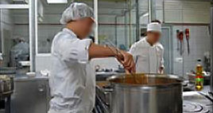
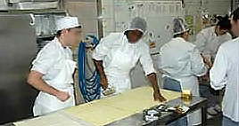
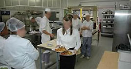

|
Mardi, 14 Décembre 2010 14:28 |

|
En 1998, un atelier de cuisine collective a progressivement été mis en place dans le cadre de la pré formation professionnelle pour la préparation des repas de l’établissement afin de répondre au projet professionnel de certains jeunes de s’orienter vers la cuisine.
Ce fut une étape à la création, en 2002, d’un autre atelier de cuisine plus traditionnelle toujours en pré formation mais avec comme objectif de permettre aux jeunes (environ 35 selon les années) la possibilité d’un contact avec une clientèle extérieure à l’établissement, donnant plus de sens et de réalisme à l’action de formation.
|
|
Le but des ateliers est de distinguer et faire émerger les potentialités des jeunes en vu de leur insertion sociale et professionnelle, tout en contribuant au développement de leur personnalité et de leur autonomie.
|
 |
|  |
Approcher et connaître le matériel, les denrées alimentaires, les règles d’hygiène et de sécurité en cuisine |

|
|
Le but des ateliers est de distinguer et faire émerger les potentialités des jeunes en vu de leur insertion sociale et professionnelle, tout en contribuant au développement de leur personnalité et de leur autonomie.
L’accueil et l’accompagnement s’organisent selon deux objectifs pédagogiques.
L’un, éducatif, est basé sur l’acquisition de notions de « savoir-être professionnel » :
- Familiarisation avec l’environnement professionnel, établir des habitudes de travail
- Expression, communication et curiosité
- Respect de l’autre, adolescent et adulte ; utiliser les richesses et les contraintes de la vie de groupe
- Prise de confiance en soi
L’autre, technique, s’oriente sur l’invitation au « savoir-faire » :
- Connaître et savoir mettre la vêture professionnelle.
- Approcher et connaître le matériel, les denrées alimentaires, les règles d’hygiène et de sécurité en cuisine.
- Acquérir une technique par la pratique de gestes techniques et l’utilisation d’outils et d’appareils adaptés en participant à des travaux simples, variés et de courte durée.
|
|
|
|
Mise à jour le Jeudi, 22 Octobre 2015 18:24 |